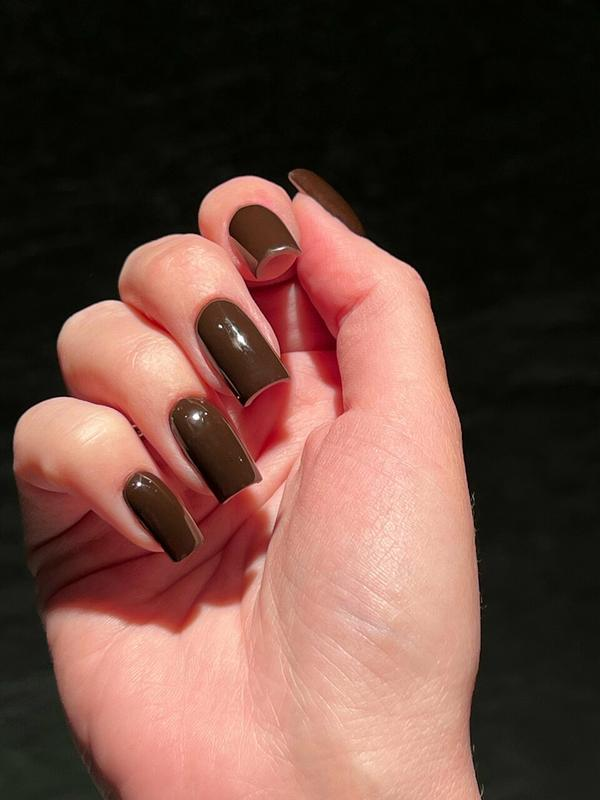
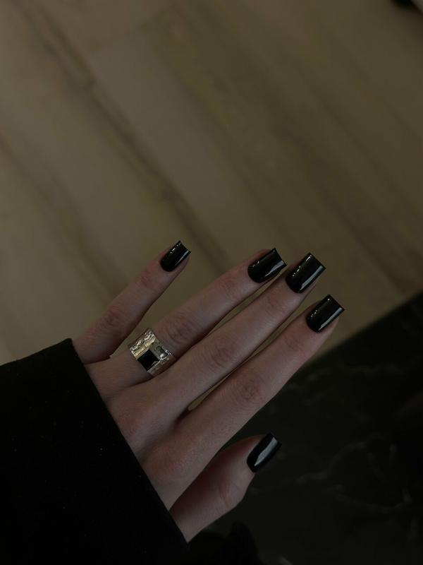
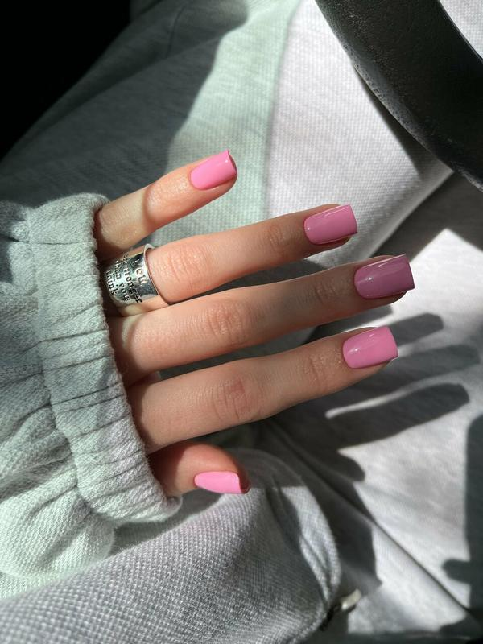
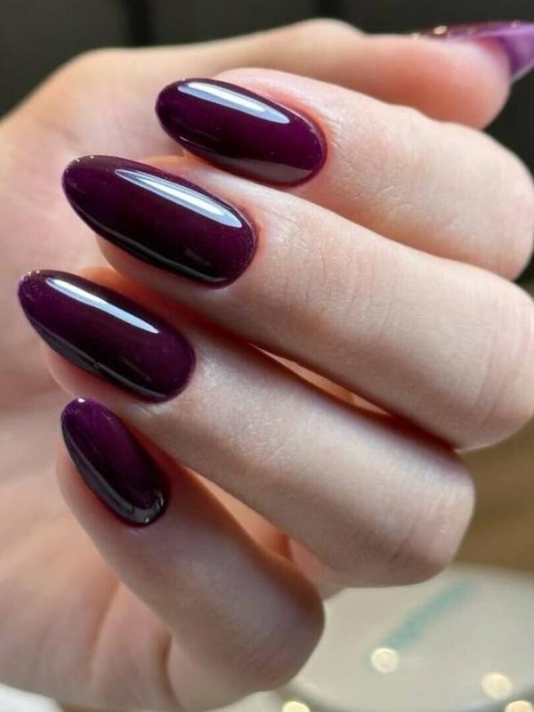
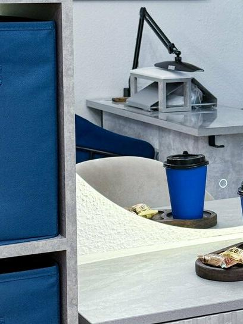
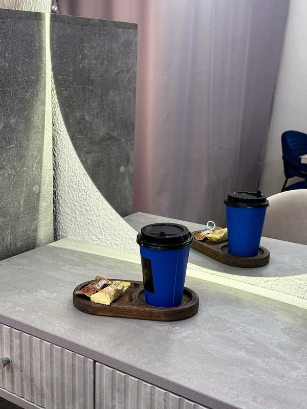
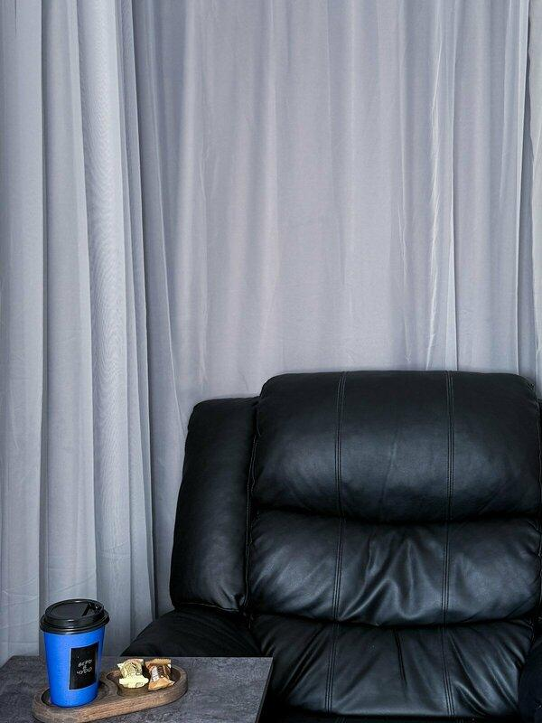

Маникюр
Классический и японский маникюр, покрытие и укрепление, работа с архитектурой ногтя, френч и дизайн. Подберём форму и оттенок.
ДЕМОНСТРАЦИЯ! НЕ ОФИЦИАЛЬНЫЙ САЙТ БИЗНЕСА
Екатеринбург · м. Геологическая
Своя студия на восьмом этаже. Мастера ногтевого сервиса уточняют форму и оттенок до начала работы, всё по записи.

Квадрат · шоколадный глянец
О студии
ArtMe – студия ногтевого сервиса в центре Екатеринбурга. Светлые стены, круглые зеркала с подсветкой, мягкое кресло для ожидания и кофе в синих чашках. Мастера ногтевого сервиса работают аккуратно и уточняют, какую форму и оттенок вы хотите.
Услуги
Классический и японский маникюр, покрытие и укрепление, работа с архитектурой ногтя, френч и дизайн. Подберём форму и оттенок.
Короткая, средняя или экстра-длина: вы выбираете длину, мастер ногтевого сервиса выстраивает ровную форму. Коррекцию можно запланировать заранее.
Экспресс-уход за пальчиками или полный педикюр со стопами, с покрытием или без.
Актуальные цены и свободное время – в онлайн-записи.
Записаться онлайнРаботы






Отзывы
Осталась очень довольна маникюром! Всё сделано аккуратно и красиво, мастер работал быстро и внимательно.
Приятный уютный салон. Шустрый мастер успела мне за 1,5 часа сделать такую красоту.
Из отзывов на 2ГИС: в первый визит гостье предложили кофе, маникюр ей понравился.
Валентина, 13.04.2026
Пересказ отзыва с 2ГИС
Как нас найти